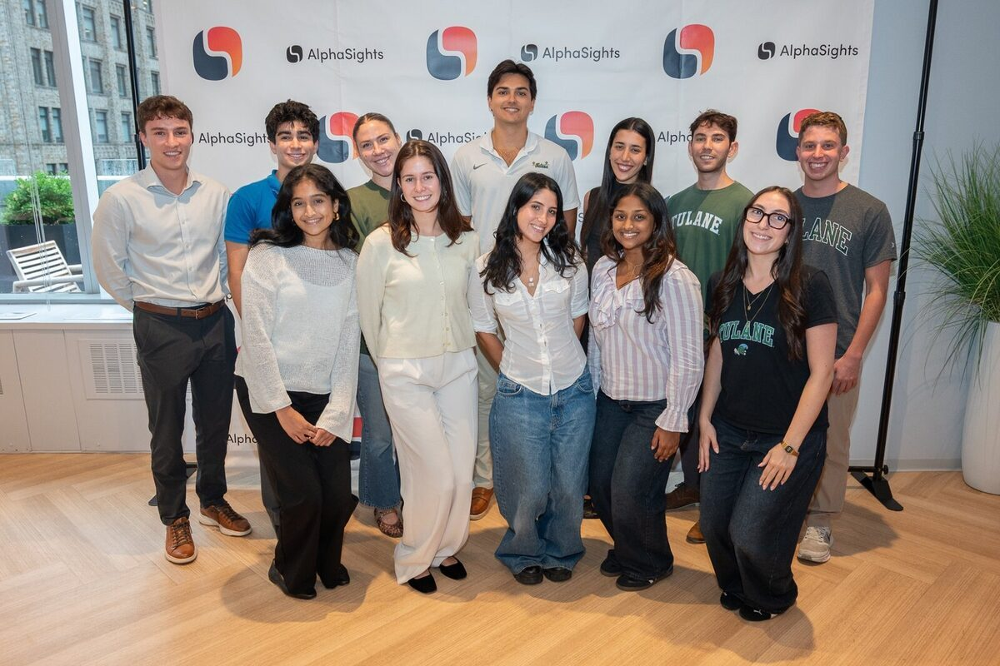
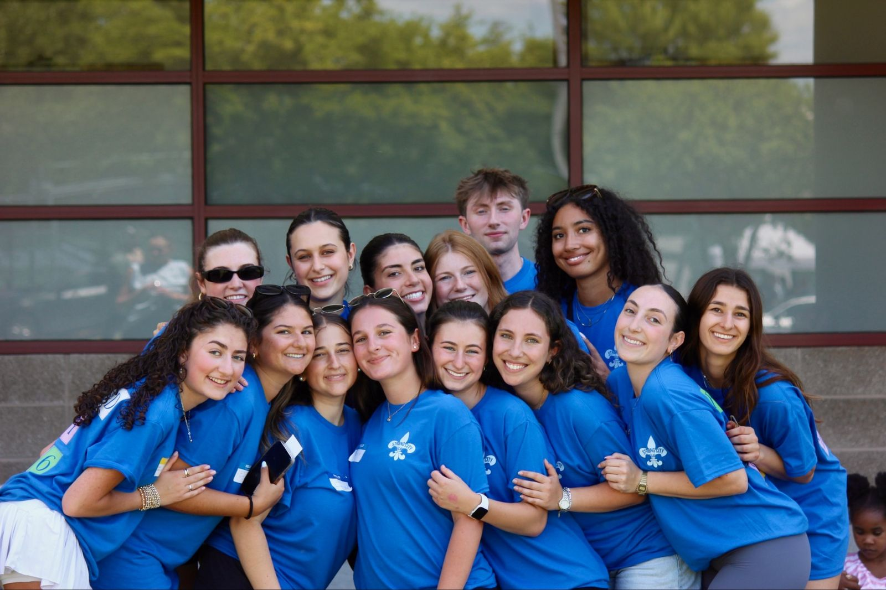

01 / Client service · Summer 2026
AlphaSights
Managed 10+ concurrent research projects for private equity clients, recruited and vetted 100+ industry experts, and facilitated 30+ client–expert consultations.
Explore AlphaSightsSelected work / 01
Five experiences that show how I approach client service, research, operations, leadership, and execution.

Managed 10+ concurrent research projects for private equity clients, recruited and vetted 100+ industry experts, and facilitated 30+ client–expert consultations.
Explore AlphaSights
Co-founded a social marketplace concept to connect Tulane students with New Orleans nonprofits. Fifteen-plus research interviews, a semester of building, and a first-place pitch earned our team $15,000.
Explore GiVV
Helped plan a Natasha Bedingfield concert for roughly 2,000 students, produced a 1,500-person campus festival, launched TUCP’s first online storefront, and now lead the organization as president.
Explore TUCP
As International Teen President, I supported a leadership network of 1,200+ teens across 25 countries and helped bring 4,500 people together for International Convention.
Explore BBYO
Building nonprofit partnerships and helping coordinate Field Day for 100+ New Orleans youth and a Thanksgiving Drive that packs 600+ food boxes for local families.
Explore Strong CityAdditional work
Reviewed grant applications for a $10 million innovation fund focused on expanding mental health support for young people.
Analyzed interview narratives in Jewish Studies research and substantively edited a sociology manuscript for structure and clarity.